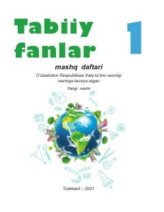

TF1-sinf o'quvchilari uchun tabiiy fanlar bo'yicha amaliy mashq daftari.
Ushbu nashr o'quvchilar uchun tabiiy fanlar bo'yicha bilimlarini mustahkamlashga mo'ljallangan mashq daftari hisoblanadi. Kitobda turli amaliy topshiriqlar, tajribalar va kuzatishlar orqali atrof-muhitni o'rganish ko'nikmalari shakllantiriladi.